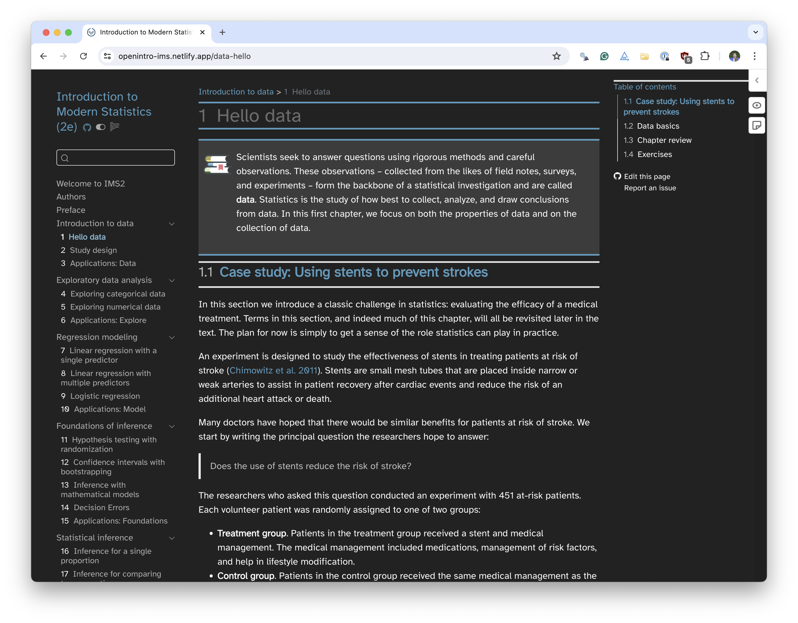
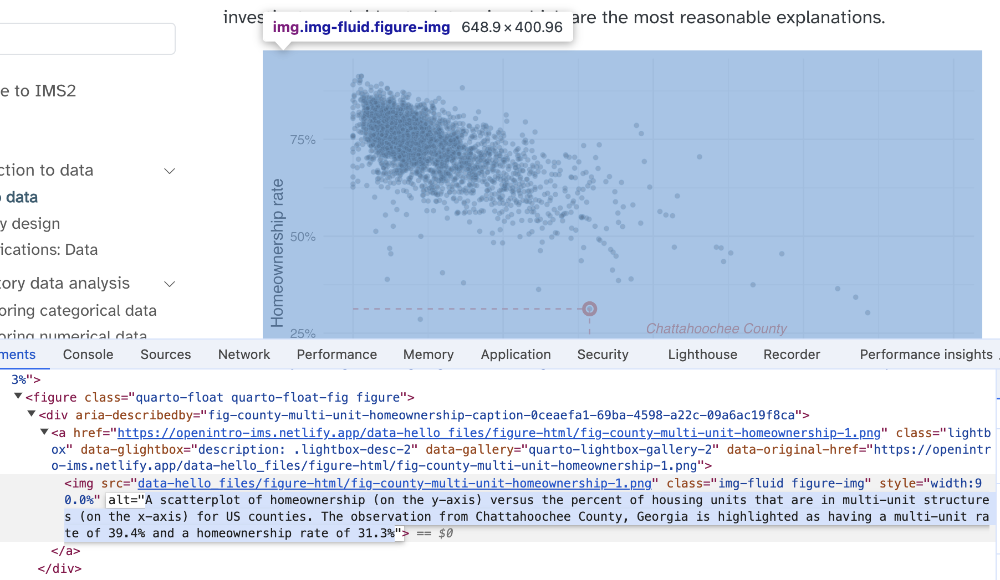

multiple outputs
multiple outputs
accessibility
Two outputs
HTML


From one source
data-hello.qmd
::: {.chapterintro data-latex=""}
Scientists seek to answer questions using rigorous methods and careful observations.
These observations -- collected from the likes of field notes, surveys, and experiments -- form the backbone of a statistical investigation and are called **data**.
Statistics is the study of how best to collect, analyze, and draw conclusions from data.
In this first chapter, we focus on both the properties of data and on the collection of data.
:::With the help of meticulous styling
With SCSS for HTML:
ims-style.scss
.chapterintro {
padding: 1em 1em 1em 4em;
margin-bottom: 10px;
background: #d5e6ef 5px center/3em no-repeat;
border-top: 3px solid #569BBD;
border-bottom: 3px solid #569BBD;
background-image: url("images/_icons/chapterintro.png");
background-position: 0.5em 1.5em;
}With the help of meticulous styling
With TeX for PDF:
ims-style.tex
\newenvironment{mdframedwithfootChapterintro}
{
\savenotes
\begin{mdframed}[%
topline=true, bottomline=true, linecolor=oiB, linewidth=1.4pt,
rightline=false, leftline=false,
backgroundcolor=oiLB]
\renewcommand{\thempfootnote}{\arabic{footnote}}
}
{
\end{mdframed}
\spewnotes
}
\newenvironment{chapterintro}{
\vspace{4mm}
\begin{mdframedwithfootChapterintro}
\begin{minipage}[t]{0.10\textwidth}
{$\:$ \\ \setkeys{Gin}{width=2.5em,keepaspectratio}\includegraphics{images/_icons/chapterintro.png}}
\end{minipage}
\hfill
\begin{minipage}[t]{0.90\textwidth}
\setlength{\parskip}{1em}
\large
}{\end{minipage}
\end{mdframedwithfootChapterintro}
\vspace{4mm}
}_quarto.yml
_quarto.yml
format:
html:
theme:
light: [cosmo, scss/ims-style.scss]
dark: [cosmo, scss/ims-style-dark.scss]
code-link: true
mainfont: Atkinson Hyperlegible
monofont: Source Code Pro
author-meta: "Mine Çetinkaya-Rundel and Johanna Hardin"
lightbox:
match: auto
loop: false
fig-dpi: 300
fig-show: hold
fig-align: center
pdf:
include-in-header: latex/ims-style.tex
include-after-body: latex/after-body.tex
documentclass: book
classoption:
- 10pt
- openany
pdf-engine: xelatex
biblio-style: apalike
keep-tex: true
block-headings: false
top-level-division: chapter
fig-dpi: 300
fig-show: hold
fig-pos: H
tbl-pos: H
fig-align: center
toc: true
toc-depth: 2Two outputs
HTML
Three outputs
HTML - Light
HTML - Dark

With even more meticulous styling
ims-style-dark.scss
Unfortunately, not all is not magic…
Unfortunately, not all is not magic…
Painstakingly add \clearpage that qmd \(\rightarrow\) LaTeX will process and qmd \(\rightarrow\) HTML will ignore:
data-hello.qmd
These two summary statistics are useful in looking for differences in the groups, and we are in for a surprise: an additional 8% of patients in the treatment group had a stroke!
This is important for two reasons.
First, it is contrary to what doctors expected, which was that stents would *reduce* the rate of strokes.
Second, it leads to a statistical question: do the data show a "real" difference between the groups?
\clearpage
This second question is subtle.
Suppose you flip a coin 100 times.
While the chance a coin lands heads in any given coin flip is 50%, we probably won't observe exactly 50 heads.
This type of variation is part of almost any type of data generating process.Unfortunately, not all is not magic…
and another…
data-hello.qmd
To answer these questions, data must be collected, such as the `county` dataset shown in @tbl-county-df.
Examining \index{summary statistic}**summary statistics** can provide numerical insights about the specifics of each of these questions.
Alternatively, graphs can be used to visually explore the data, potentially providing more insight than a summary statistic.
\clearpage
\index{scatterplot}**Scatterplots** are one type of graph used to study the relationship between two numerical variables.
@fig-county-multi-unit-homeownership displays the relationship between the variables `homeownership` and `multi_unit`, which is the percent of housing units that are in multi-unit structures (e.g., apartments, condos).
Each point on the plot represents a single county.Unfortunately, not all is not magic…
and another…
Bring back the magic
By building on things qmd \(\rightarrow\) HTML will happily ignore and qmd \(\rightarrow\) will process: \index{}
data-hello.qmd
We can compute summary statistics from the table to give us a better idea of how the impact of the stent treatment differed between the two groups.
A **summary statistic** is a single number summarizing data from a sample.\index{summary statistic}
For instance, the primary results of the study after 1 year could be described by two summary statistics: the proportion of people who had a stroke in the treatment and control groups.In three components
\index{}tags:
data-hello.qmd
We can compute summary statistics from the table to give us a better idea of how the impact of the stent treatment differed between the two groups.
A **summary statistic** is a single number summarizing data from a sample.\index{summary statistic}
For instance, the primary results of the study after 1 year could be described by two summary statistics: the proportion of people who had a stroke in the treatment and control groups.. . .
- A
.texfile to be appended to the end during render:
after-body.tex
\backmatter
\printindex. . .
- Calling that file from
_quarto.yml:
Looking forward to typst for styling

TODAY
One source
+
2 style files
\(\downarrow\)
2 outputs
FUTURE
One source
+
1 style file
\(\downarrow\)
2 outputs
Looking forward to typst for tables
TODAY
data-hello.qmd
Looking forward to typst for tables
TODAY
data-hello.qmd
FUTURE
Accessibility: fig-alt
data-hello.qmd
#| label: fig-county-multi-unit-homeownership
#| ...
#| fig-alt: A scatterplot of homeownership (on the y-axis) versus the percent of
#| housing units that are in multi-unit structures (on the x-axis) for US
#| counties. The observation from Chattahoochee County, Georgia
#| is highlighted as having a multi-unit rate of 39.4% and a
#| homeownership rate of 31.3%
ggplot(county, aes(x = multi_unit, y = homeownership)) +
geom_point(alpha = 0.3, fill = IMSCOL["black", "full"], shape = 21) +
...
Making sure you have alt text
TO DO: Share code snippet for checking all figures have alt-text